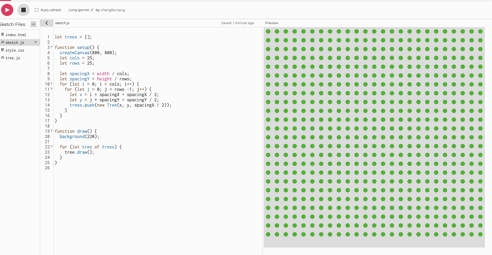
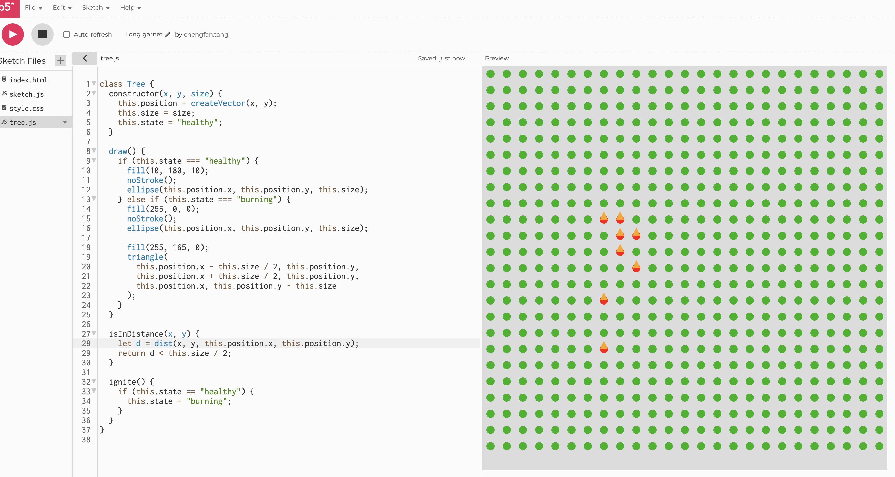
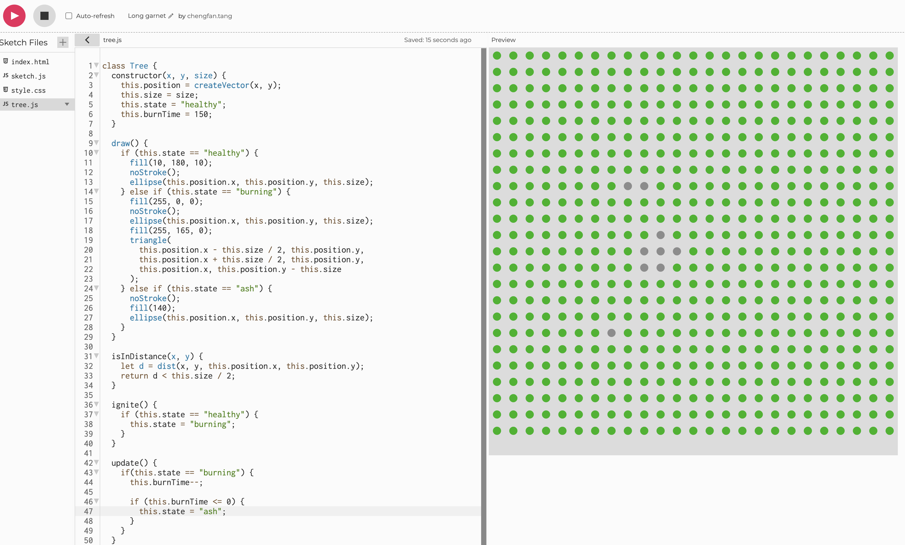
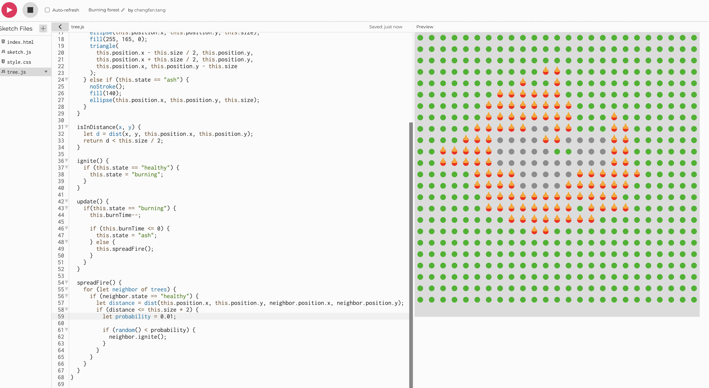
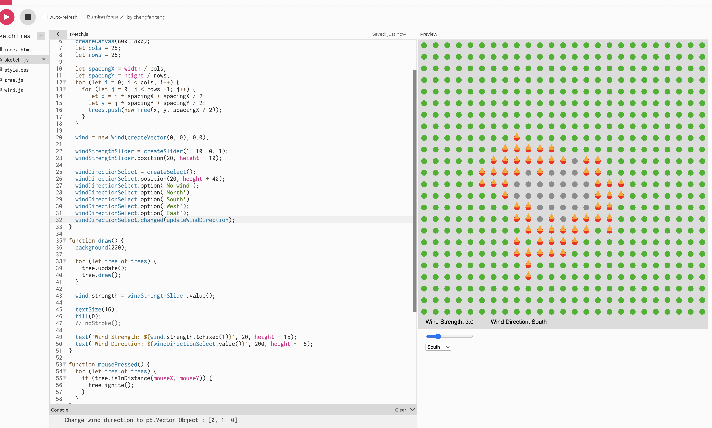
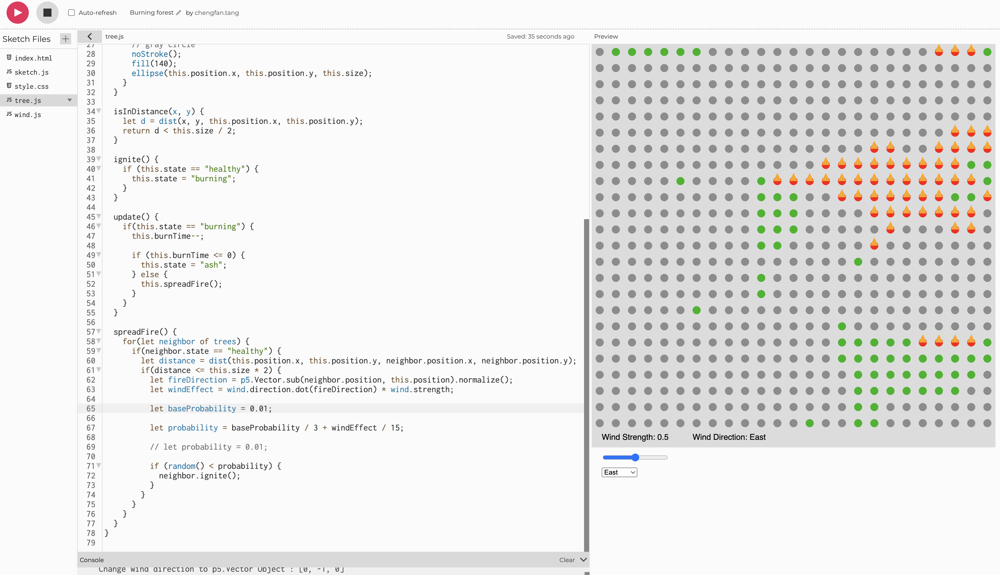
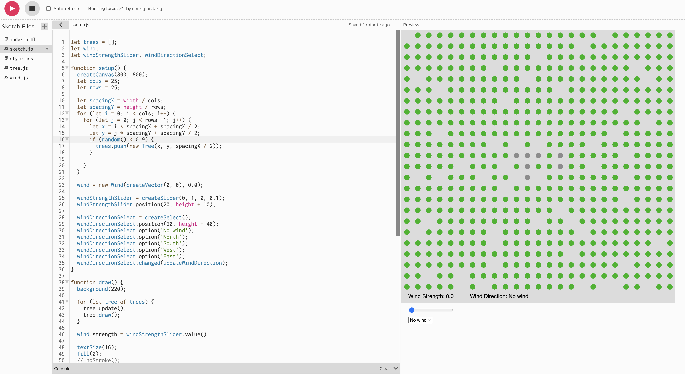

Burning Forest with Wind
Ideation
This assignment is for similating natural forces with vector. I chose to simulate a burning forest with wind. The basic idea is that, the canvas will be filled with trees, and each tree can be ignited by clicking on it. The fire will spread from tree to tree and the wind will affect the spread of the fire.
Process
1. I started with creating the forest, to keep it simple, I use green circles to represent the trees, and place them on the canvas like in grid. Each tree has its own position and size. I also created a tree array with to hold all tree objects.

2. To create the burning effect, I needed a way to ignite the tree. I added a mousePressed() function to check if the mouse is clicked on a tree. To achieve this, I need to calculate if the location clicked is within the tree's shape. I used the dist() function to do that. In addition, I need a way to represent the state of the tree, like healthy or burning, so I added a state property to the tree class and creating the buring effect using triangle.

3. The tree should not be burning forever, so I added a burning time to each tree, when it reaches 0, the tree turns into ash. I added the new state called "ash" and the tree will display a gray circle when become ash. Each draw on canvas will update the state of each tree. I'm not doing any precise time tracking, just decrease the count by 1 each frame is enough.

4. The next step is to make fire to spread. A burning tree should be able to ignite its neighbors, but by a chance. I added a spread() function to the tree class to check if the tree can ignite its neighbors. I don't have a good way to know which trees are nearby, so I loop through all the trees in the array and use the dist() function to calculate the distance between two trees, and if the distance is within a certain range, the tree will call its neighbor's ignite() function. A nice way to achieve "by change" is to use the random() function to generate a random number between 0 and 1, and compare it with a pre-set probability number. The visual effect looks pretty amazing.

5. To simulate the natural force, I need to add the wind. The wind should have strength and direction. To keep it simple, I only used 4 directions, north, south, west, and east. These should be user control input. I created a slider to allow strength control, and a drop down select menu for direction. I also think wind should be an object and have strength and direction properties so I created a Wind class.

6. To make the wind affect the fire, I need to do some calculation when the fire is spreading. It should be higher probability to spread the fire to the tree that is downwind, and lower probability to the tree that is upwind. Since the wind direction is a vector, and the tree position is also a vector, I can subtract the two trees' position vector to get the fire direction, and then dot product the wind direction vector to get the wind effect. The dot product will return a value between -1 and 1, which means if the wind is blowing in the exactly the same direction as the fire, the value should be 1, indicating the strongest effect. Or if thw wind is blowing in an angle, it should be a smaller value then 1. If the wind is blowing in the opposite direction, the value should be negative, indicating the wind is blowing the fire out. I use this dot product to multiple by the wind strength and add the result to the probability calculation. Initally, the fire spreading way to fast. I think the reason is because the probability is too high from the previous calculation, so I played with the numbers to make it a smaller value. Now the wind can affect the fire spread, and the speed is somewhat reasonable.

7. There should be some dense areas and some sparse areas in the forest, instead of one tree every grid cell. I added the same random() probability to the tree creation process. So now every time this run, a new random forest is generated.